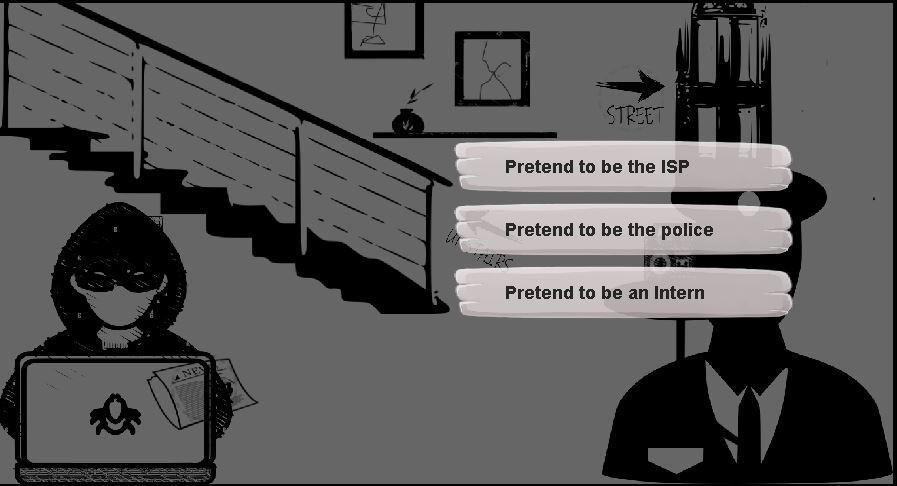
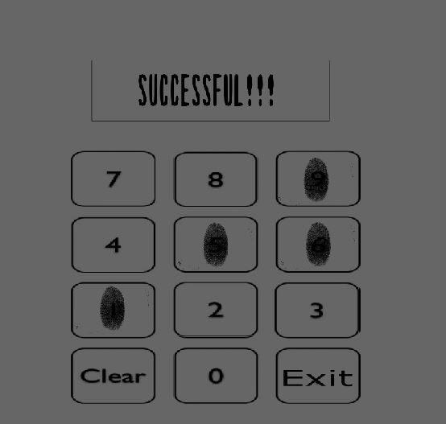
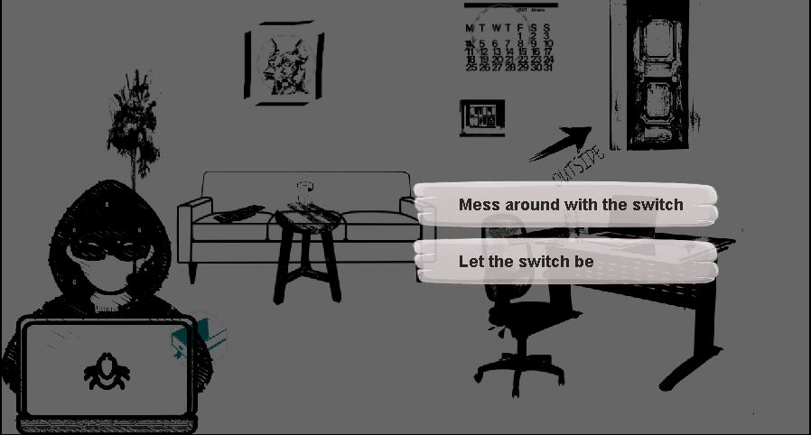

The Great Heist
About the game



The Great Heist is a point and click story driven narrative game which is about a computer genius who tries to steal a priceless ruby from the city museum by using his skills in hacking and social engineering. The game includes puzzles that the player gets to solve as the story progresses. The player is given with a variety of choices and the decisios that the he take during the game would affect the fate of our main protagonist... This game was a school project which was developed using 'Deig', a user-facing tool that is mainly used to build dialog based games which uses visual programming as its main building block.
Responsibilities
- Creating the storyline and narrative
- Creating the background environments and interactables for all scenes
- Handling the game logic